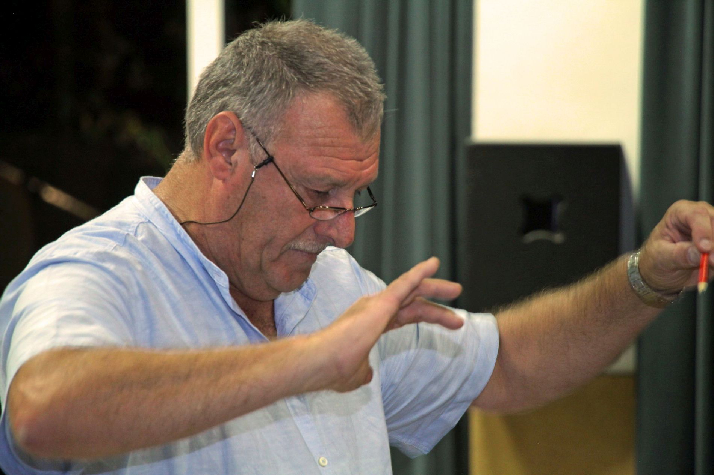
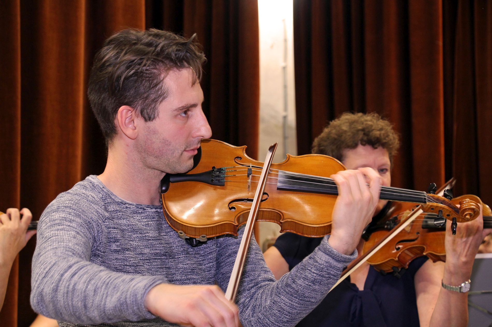

Het Herentals Symfonisch Orkest, kortweg het H.S.O.,
mag zich terecht een semiprofessioneel orkest noemen. Het is samengesteld uit
zowel getalenteerde amateurmuzikanten als ervaren beroepsmuzikanten. De
artistieke leiding is in handen van de heer Carl Vervoort, die reeds meerdere orkesten heeft
gedirigeerd.
Op zoek naar een nieuwe uitdaging besloot hij samen met een enthousiaste groep
vrienden om begin 2017 een nieuw orkest op te richten in Herentals.
Enthousiasme werkt aanstekelijk, want al snel
vormde zich een volwaardig symfonisch orkest.
Het H.S.O. streeft ernaar om kwaliteitsvolle concerten te geven zonder het plezier om samen te
musiceren uit het oog te verliezen. Op het repertoire staan klassieke werken, opera en operette,
musical, filmmuziek, enz.
Het orkest wordt gesteund door:

De dirigent
Carl Vervoort studeerde viool en altviool aan de Conservatoria van Antwerpen en Brussel. Als student volgde hij eveneens verschillende cursussen voor orkest en kamermuziek in het Oostenrijkse Salzburg.
Na zijn studies speelde hij in diverse orkesten, waaronder het Nationaal Orkest van België, het Filharmonisch Orkest van Antwerpen, het BRT Filharmonisch Orkest en het Belgisch Kamerorkest. Hoewel hij een liefhebber is van verschillende genres, ging – en gaat – Carls voorkeur uit naar operamuziek. De voedingsbodem hiervoor was zijn aanstelling als altviolist in de Opera voor Vlaanderen, waar hij enkele jaren gewerkt heeft.
Verder heeft hij regelmatig deel uitgemaakt van het Golden Age Quartet waar het lichtere muziekgenre aan bod kwam, met o.m. muziek van Chaplin, Elton John, Lennon & McCartney,... Hij is ook al vele jaren altviolist bij tal van orkesten in Nederland.
Als dirigent heeft hij zijn eerste ervaring opgedaan bij het Belcantogezelschap van Sint-Niklaas met operettes en musicals, zoals "Victoria en haar Huzaar", "Annie get your gun", "Orfeus in deOnderwereld", ...
Bij het lyrisch gezelschap Aruna dirigeerde hij "Die Fledermaus" en bekende opera's zoals "LaTraviata", "Don Pasquale" en "Cavalleria Rusticana".
Hij werd tevens gevraagd bij Stichting Klein Podium in Roosendaal waar hij twee barokopera's dirigeerde, nl. "Dido en Aeneas" en "Die Lustige Weiber von Windsor".
Van 2011 tot 2016 was Carl artistiek leider en dirigent van het Kempens Symfonisch Orkest te Nijlen. Onder zijn vakkundige leiding bereikte het orkest een hoger niveau en boekte hij veel succes op de jaarlijkse concerten.
Om zich verder te vervolmaken volgde hij les bij Silveer Van den Broeck, die van 2001 tot aan zijn pensioen professor orkestdirectie was aan het Conservatorium van Brussel.
De concertmeester
Niels Grosemans kreeg zijn eerste vioolonderricht van de heer V. Ten Haef. Later volgde hij les op de academie voor Muziek en Woord van Tessenderlo bij W. Daegheleer en A. Swinnen. Na zijn middelbare studies ging hij naar het Lemmensinstituut waar hij met grote onderscheiding zijn Master in Muziek, Master in de Kamermuziek en zijn agregaat behaalde bij B. Bracke, O. Derolez en R. Dieltiens. Verder studeerde hij wiskunde – fysica aan GroepT in Leuven. Na als leerkracht muzikale opvoeding, wiskunde en wetenschappelijk werk te hebben gegeven in de middenschool Prins van Oranje te Diest, is hij hier nu directeur.
In binnen- en buitenland volgde hij verschillende cursussen bij R. Szreder, L. Wang, K. Nagata, C. Vidal , C. Constantinescu, S. Kuyken, …
Hij maakte tournees door binnen- en buitenland met het Zuid-Nederlands begeleidingsorkest, het Filharmonisch orkest van Vlaanderen, het National Youth Orchestra, Limburgs Orkest Jeugd en Muziek, Eroica Ensemble, Brussels Philharmonic, Elias Ensemble, … en speelde onder leiding van Justin Freer, John Adams, Paul McCreech, Robert Groslot, Edmond Saveniers, Luc Borms, J. Charpentier, Bert Minten, … Hij is verbonden aan het orkest van het Vlaams Muziektheater, en de Chapelle de Loraine.
Niels speelt op een Italiaanse viool uit Pisa van de hand van Chericoni.
Het bestuur
Voorzitter: Elly Brouwers
Ondervoorzitter: Carl Vervoort
Penningmeester: Marcella De Beuckelaer
Leden
Leden kunnen hier inloggen om het repetitieschema te raadplegen.